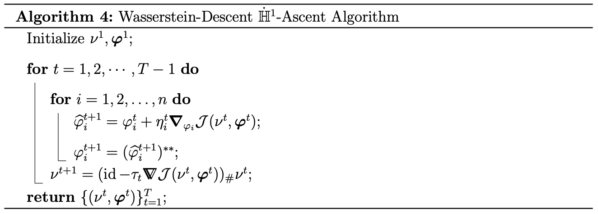

Wasserstein Descent \( \dot{\mathbb{H}}^1 \)-Ascent (WDHA) Documentation
Welcome to WDHA Documentation! This documentation describes the implementation for "Wasserstein Descent \( \dot{\mathbb{H}}^1 \)-Ascent (WDHA) algorithm" for computing Optimal Transport Barycenter (a.k.a Wasserstein Barycenter) introduced in our paper:
Kaheon Kim, Rentian Yao, Changbo Zhu, and Xiaohui Chen
International Conference on Machine Learning (ICML), 2025
1. Introduction
1.1. Formulation
Combining with Kantorovich formulation, We approach Wasserstein barycenter problem as nonconvex-concave minimax problem between Wasserstein space and Sobolev space.
1.2. Algorithm
To tackle this minimax problem, we introduce Wasserstein Descent \( \dot{\mathbb{H}}^1 \)-Ascent (WDHA) algorithm:

- Wasserstein Gradient: \(\boldsymbol{\nabla} \mathcal{J}(\nu, \boldsymbol{\varphi}) = \text{id} - \nabla \bar{\varphi}, \text{ where } \bar{\varphi} = \frac{1}{n}\sum_{i=1}^n \varphi_i\)
- \(\dot{\mathbb{H}}^1\)-Gradient: \(\bbNabla_{\varphi_i} \mathcal{J}(\nu, \boldsymbol{\varphi}) = \frac{1}{n}(-\Delta)^{-1}(-\nu + (\nabla \varphi_i^*)_\# \mu_i)\)
- Convex Hull: \( (\cdot)^{**}\) where \( f^*(y) = \sup_{x\in \Omega} \left< x,y \right>-f(x)\) with \(f:\Omega\rightarrow \mathbb{R}\)
2. Implementation
The function for WDHA is built based on the core functionality (c-transform and pushforward measure) provided by Flavien Leger in the BFM package.
!git clone https://github.com/Math-Jacobs/bfm
!pip install bfm/python
!pip install pot
!wget -O functions.py https://raw.githubusercontent.com/kaheonkim/WDHA/main/implementation2D/functions.py
!wget -O metric.py https://raw.githubusercontent.com/kaheonkim/WDHA/main/implementation2D/metric.py
import numpy as np
from metric import *
from functions import *
%config InlineBackend.figure_format = 'retina'
plt.rcParams['figure.figsize'] = (13, 8)
plt.rcParams['image.cmap'] = 'viridis'2.1. Uniform Distributions with Varying Support
Four distinct shapes are placed at four different locations: a square at the top-left, a heart at the bottom-left, a cross at the bottom-right, and a circle at the top-right. These shapes represent four uniform probability densities with distinct supports. We demonstrate the application of WDHA on these four synthetic uniform distributions.
n1, n2 = 1024, 1024
x, y = np.meshgrid(np.linspace(0.5/n1, 1-0.5/n1, n1),
np.linspace(0.5/n2, 1-0.5/n2, n2))
r = 0.1
# Initialize densities
mu1 = np.zeros((n2, n1))
mu1[(x-0.8)**2 + (y-0.8)**2 < r**2] = 1
mu2 = np.zeros((n2, n1))
mu2[(0.8-r/2.5 < x) & (x < 0.8+r/2.5) & (0.3-r < y) & (y < 0.3+r)] = 1
mu2[(0.3-r/2.5 < y) & (y < 0.3+r/2.5) & (0.8-r < x) & (x < 0.8+r)] = 1
# Normalize
mu1 *= n1*n2 / np.sum(mu1)
mu2 *= n1*n2 / np.sum(mu2)
heart = np.zeros((n2, n1))
heart[((10*x-2)**2+(10*(y-0.3))**2-1)**3 - (10*x-2)**2*(10*(y-0.3))**3 < 0] = 1
heart *= n1 * n2 / np.sum(heart)
rectangle = np.zeros((n2, n1))
rectangle[(x < 0.3) & (x > 0.1) & (y > 0.7) & (y < 0.9)] = 1
rectangle *= n1*n2 / np.sum(rectangle)
mu = [mu1, mu2, heart, rectangle]
plotting(mu, np.zeros((n2,n1)), '_', save_option=False)mu_WGHA = frechet_mean(mu, 300, 'MU', save_option=False, return_option=True)2.2. High-resolution Handwritten Digit Images
WDHA is applied to the barycenter problem using 100 high-resolution (500×500) images of the digit 8, provided by Cédric Beaulac and Jeffrey S. Rosenthal in their preprint "Analysis of a high-resolution hand-written digits data set with writer characteristics". The dataset — Images(500x500).npy and WriterInfo.npy — is available at the following link.
Images = np.load('/content/drive/My Drive/WDHA/Images(500x500).npy')
WriterInfo = np.load('/content/drive/My Drive/WDHA/WriterInfo.npy')
digit = WriterInfo[:, 0]
user = WriterInfo[:, -1]
num_image = 100
num_iter = 300
numbers8 = 255 - Images[(digit == 8)][:num_image].astype('float64')
for j in range(num_image):
numbers8[j] /= np.sum(numbers8[j])
numbers8[j] *= 500 * 500
del Images, WriterInfo, user, digit
fig, axes = plt.subplots(1, 3, figsize=(10, 4)) # 3 rows, 1 column
plotting_mnist(numbers8[0], '', ax=axes[0])
plotting_mnist(numbers8[1], '', ax=axes[1])
plotting_mnist(numbers8[2], '', ax=axes[2])
plt.tight_layout()
plt.show()
bary8 = frechet_mean(numbers8, num_iter, 'mnist', plot_option=False, save_option=False, return_option=True)
plotting_mnist(bary8, '')